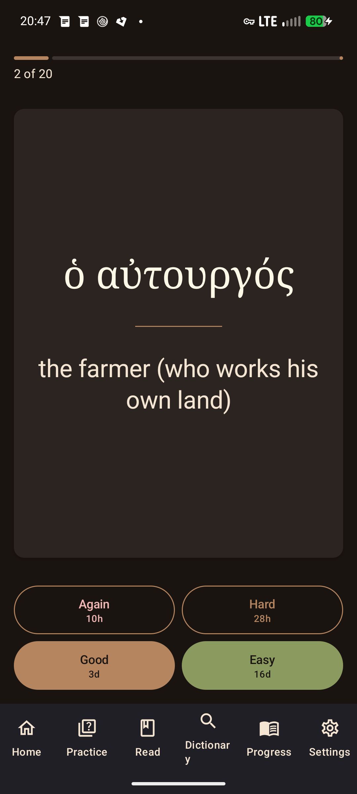

Greek
GreekLearner's guide
How the app teaches, in order: the alphabet gate, the review loop, practice mode, and the reader and dictionary. Every claim on this page matches shipped behavior as of October 2026.
1. The alphabet gate
The app refuses to pour vocabulary into your queue until you can read the script. Flashcard recognition is not the skill that matters for reading Greek — glyph recognition is — so new vocabulary cards are gated, and only new cards: due reviews are never blocked, and the reader and dictionary stay open the whole time (decoding real words is alphabet practice).
The letters track
"The Alphabet & Pronunciation" is 43 cards in 5 staged chapters:
| Chapter | Contents | Cards |
|---|---|---|
| 1 | The Vowels | 7 |
| 2 | The Stops | 9 |
| 3 | The Continuants | 9 |
| 4 | Breathings & Accents | 7 |
| 5 | Diphthongs | 11 |
Chapters unlock in sequence, but with a pragmatic rule specific to letters: a card counts toward unlock progress once you have seen it twice (2 or more reviews, any source). Vocabulary chapters use the stricter 30-day stability rule — punishingly slow for a recognition skill of 24 glyphs, so the letters track deliberately doesn't apply it to itself.
Unlocking vocabulary — three honest lanes
- The Alphabet Check. 24 multiple-choice questions drawn stratified across the whole letters track, alternating both directions — see the glyph, name it; see the name, pick the glyph. Pass with 22 or more of 24 (~92%). It is available from minute one as a placement test: an experienced classicist unlocks vocabulary in about three minutes. Retakes are unlimited, and every miss is recycled straight into your FSRS review deck — taking the check teaches.
- The organic lane. No buttons, no test: if you simply work the letters track, the gate lifts automatically once every one of the 43 cards is introduced, your measured letters-practice accuracy is at least 85% over at least 20 practice attempts, and letters activity spans at least 2 distinct days (so a same-day cram doesn't count).
- Prior knowledge / history. There's an explicit "I already know the Greek alphabet" switch in Settings (logged as self-reported), and any existing review history for vocabulary cards — for example from an earlier install — satisfies the gate on its own.
Once satisfied, the gate latches permanently — passing the check on one device unlocks it everywhere when you sync, and it never re-locks. A diligent beginner doing ~20 minutes a day typically unlocks vocabulary on day 4–6. The full reasoning, including the anti-gaming math (a retake-spammer with true accuracy 0.7 passes about 1% of attempts), is in DESIGN-alphabet-gate.md.
2. Review
The review loop is FSRS — the modern, two-component memory model (stability
and difficulty) used by AniM-like ecosystems, here via the official Rust
fsrs crate at 90% desired retention.
- Due cards first, most overdue first. Nothing due today is dropped.
- Misses come back the same session. Due dates are full timestamps with no whole-day rounding and no midnight stamping, so FSRS's sub-day learning steps survive: a card you rate Again on its first lapses is due again in minutes (an established card you forgot shows its own longer relearn interval — see the screenshot, where Again is 10 hours on a 16-day-stable card).
- Interval previews on the buttons. Again / Hard / Good / Easy each display the interval they'd schedule, so you calibrate honestly instead of gaming a mystery scheduler.
- Session state survives. An interrupted review session is persisted and resumes where it left off, even after the process is killed.

3. Practice — measured, not self-reported
Self-rating inflates; measured assessment doesn't. Practice mode generates objective questions from your own deck:
- Multiple choice (EN → GR): the prompt is the card's English gloss, the four choices are Greek fronts. Distractors are chosen by a strict widening policy — same part of speech and chapter first, then the same textbook, then anywhere — so wrong answers are plausible on purpose.
- Typed answers: graded three ways — Exact (accents and all), Lenient (right letters, accents off or case folded), or Wrong. The accent-tolerant check reuses the dictionary's own normalization, so grading can't drift from search.
-
Results are written into your review history tagged
source = practice— scheduling is identical, but Home shows a separate, honest practice accuracy number measured only over practice rows.
4. Reader and dictionary
- Tap-to-parse reader. tap any Greek word in a text to get its full morphological analysis from a 36,165-lemma / 958,469-form database derived from Morpheus (the Perseus lemmatizer output). Exact-form lookup first, accent-stripped fallback second. A word can be marked known or added to your SRS deck in one tap.
- Dictionary. Full-text search (FTS5 + BM25) over all 36k lemmas, searching headwords and glosses alike. Because raw BM25 buries core words — a search for "man" once ranked ἄνθρωπος below a screen of "man-slaying" compounds — an exact/leading-gloss match sorts before anything BM25 finds.
-
Honest glosses. Glosses are Morpheus-derived short hints,
not LSJ (the UI says so: "Morpheus glosses (LSJ pending)"). An audit of the
most-visible entries found junk like ἄνθρωπος → "manfaced"; a curated
override table (80 TSV rules covering 88 lemmas) fixes the top offenders —
ἄνθρωπος now reads "man, human being" and leads the "man" results.
Corrections live in version-controlled text you can read:
data/overrides/lemma_glosses.tsv.
5. Why only 10 new cards a day?
New-card introductions are capped at 10 per day, and Home shows the counter ("New today: 3 / 10") so the budget is visible.
This is not arbitrary austerity. Every card you introduce today becomes future review debt; spaced-repetition research and long practitioner experience agree that unbounded intake collapses into overdue queues and quit spirals — the spacing effect (Cepeda et al. 2006; Bahrick et al. 1993) is exactly the effect you're buying, and it can't be massed. The design discussion's counterpoint lives in DESIGN-alphabet-gate.md and the pacing notes in PLAN-PARALLEL-AGENTS.md: at the 10-card cap, the full 43-card alphabet track is still introduced in 4–5 days. Chapters behind you unlock the next one when you've mastered 80% of the current one's cards (mastered = FSRS stability of 30 days or more) — the firehose stays closed until said mastery is real, not "seen once".